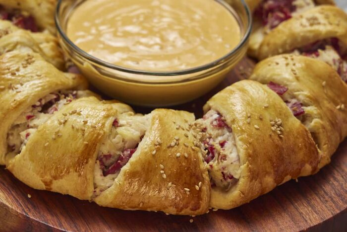

Reuben Ring

A Reuben Ring is a dish based on the common North American Reuben Sandwich. The main ingredients consist of corned beef, swiss cheese, sauerkraut, and thousand island dressing wrapped with refrigerated biscuits. In regular reuben sandwiches, it is often all put between rye bread. The Reuben Sandwich was created by a Jewish grocer residing in Nebraska, named Reuben Kulakofsky.
There are many different dishes you can make using Reuben ingredients. This can include Montreal Reuben, Walleye Reuben, Grouper Reuben, Reuben Egg Rolls, and Rachel Sandwich. You can find Reuben sandwichs at many American resturant as it is an extremely popular sandwich.
Ingredients
- 12oz of corned beef chopped
- 1 Cup Swiss Cheese
- 1 Cup sauerkraut
- 2 cans Crescent Rolls Canned
- 2 Tbsp thousand island dressing
- Fresh Parsley
- Butter to Top
Steps
- Get out and measure all of your ingredients.
- Preheat the oven to 350 F. Prep a baking sheet by spraying it with baking spray and set aside.
- In a medium sized bowl, combine the corned beef, sauerkraut and dressing and mix.
- Open cans of crescent dough and separate the triangles along the perforated lines. Lay each triangle overlapping each other about ¼” in a circle on the prepped baking sheet.
- Fold cheese in half and lay each piece, slightly overlapping each other on top of the crescent dough ring.
- Evenly spoon the corned beef mixture onto the cheese.
- Take the thin ends of the crescent roll and fold over the corned beef mixture.
- Tuck it in underneath the bottom of the crescent dough. Place into the preheated oven.
- Top with mixture of fresh parsley and butter
- Bake for 25-30 minutes or until it is lightly browned.
- Serve immediately.